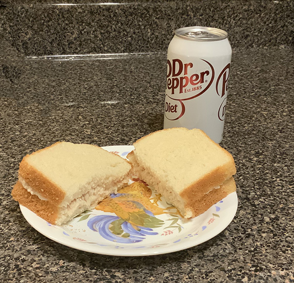

College Cooking
please note: this is a work in progress. Text alignment and other issues will be improved shortly!
Being in college often means being short on time and money. Here are three dishes that are easy on the wallet and the schedule!
Breakfast - Cereal
You will need:
Directions:
- pour cereal into bowl
- pour milk onto cereal
- use spoon to eat

Lunch - Tuna Sandwich
You will need:
- tuna (can or pouch)
- 2 TBSP mayonnaise (or enough for a creamy texture)
- onion powder to taste
- pickles (optional)
- 2 slices bread
Directions:
- empty tuna can/pouch into bowl
- add mayonnaise and stir well
- mix in onion powder
- add pickles (optional)
- spread mixture on bread
- enjoy!

Dinner - Chicken Noodles
You will need:
- One (1) package Lipton Pasta Sides (Chicken flavor)
- 2 cups water
- 1 TBSP butter or margarine (optional)
Directions:
- Bring water and butter/margarine to boil
- Add contents of pouch to boiling water
- Cook at medium-high heat for 5 - 7 minutes or until tender
- Let stand (no heat) for 2 minutes
- Serve and Enjoy!